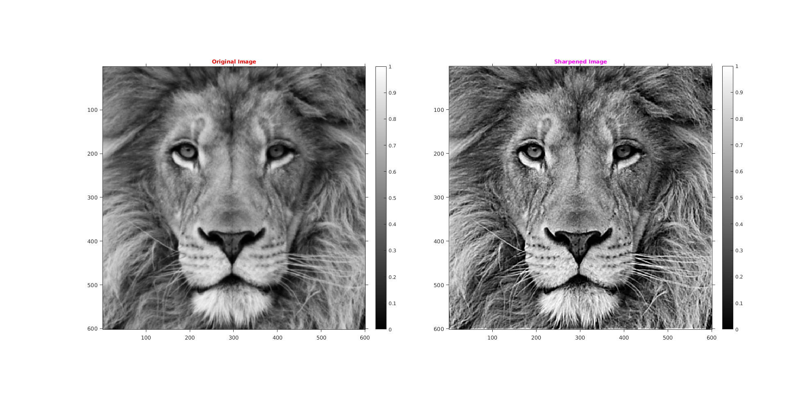
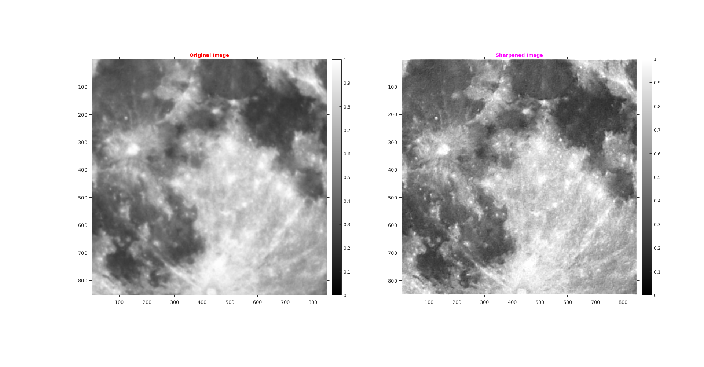

Assignment 2 -- Question 1
CS-663 Group-163059009,16305R011,16305R006
Contents
Unsharp Masking
It is done in following steps :
- Input = Image I (already a bit blurred)
- Further blur input image = G * I, where G is Gaussian mask which is convolved with the image I
- Negated-blurred image = – G * I
- Subtract negated-blurred image from I = I – (G * I) , this is unsharp mask
- Finally, Unsharp-mask filter = I + s (I – G * I) , where s is the scalling factor
Tuned parameters are :
- hsize is taken as [100,100] (for Gaussian Blur)
- sigma is taken as 1.6 (for Gaussian Blur)
- scaling factor for LionCrop is 2.1 and for SuperMoonCrop is 4
Observations
With increasing scaling factor the edges becomes too thick.
Lion
- hsize is taken as [100,100] (for Gaussian Blur)
- sigma is taken as 1.6 (for Gaussian Blur)
- scaling factor for LionCrop is 2.1
tic; file='../data/lionCrop.mat'; l = load(file); img=l.imageOrig; file1='../data/superMoonCrop.mat'; l = load(file1); img1=l.imageOrig; figure('name','lionCrop','units','normalized','outerposition',[0 0 1 1]); subplot(121); imshow(img); title('\fontsize{10}{\color{red}Original Image}'); axis tight,axis on; o1 = get(gca, 'Position'); colorbar(),set(gca, 'Position', o1); subplot(122); outImg=myUnsharpMasking(img,[100,100],1.6,2.1); imshow(outImg); title('\fontsize{10}{\color{magenta}Sharpened Image}'); axis tight,axis on; o1 = get(gca, 'Position'); colorbar(),set(gca, 'Position', o1);
SuperMoonCrop
- hsize is taken as [100,100] (for Gaussian Blur)
- sigma is taken as 1.6 (for Gaussian Blur)
- scaling factor for LionCrop is 4
figure('name','superMoonCrop','units','normalized','outerposition',[0 0 1 1]); subplot(121); imshow(img1); title('\fontsize{10}{\color{red}Original Image}'); axis tight,axis on; o1 = get(gca, 'Position'); colorbar(),set(gca, 'Position', o1); subplot(122); outImg=myUnsharpMasking(img1,[100,100],1.6,4); imshow(outImg); title('\fontsize{10}{\color{magenta}Sharpened Image}'); axis tight,axis on; o1 = get(gca, 'Position'); colorbar(),set(gca, 'Position', o1); toc;
Elapsed time is 2.039124 seconds.